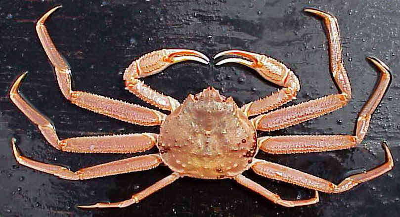

Images used
The tanner crab, en:Chionoecetes bairdi by Wikipedia.
Sources
- Fisheries, NOAA. (2023, December 5). Research confirms link between snow crab decline and marine heatwave. https://www.fisheries.noaa.gov/feature-story/research-confirms-link-between-snow-crab-decline-and-marine-heatwave